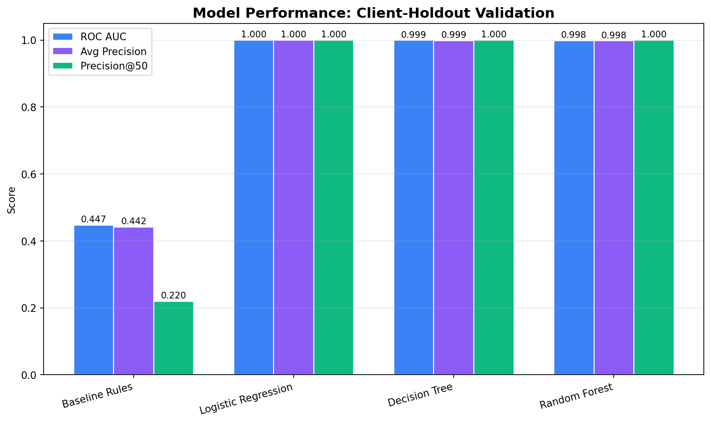
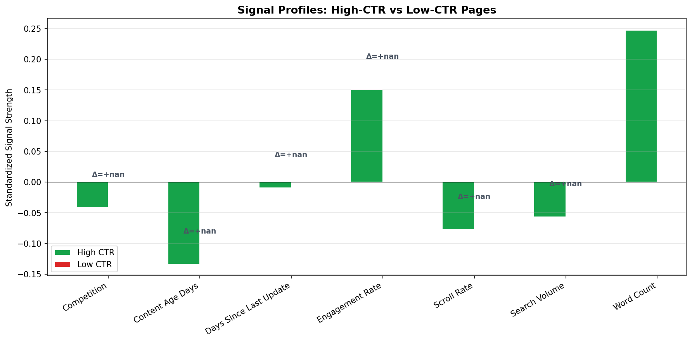
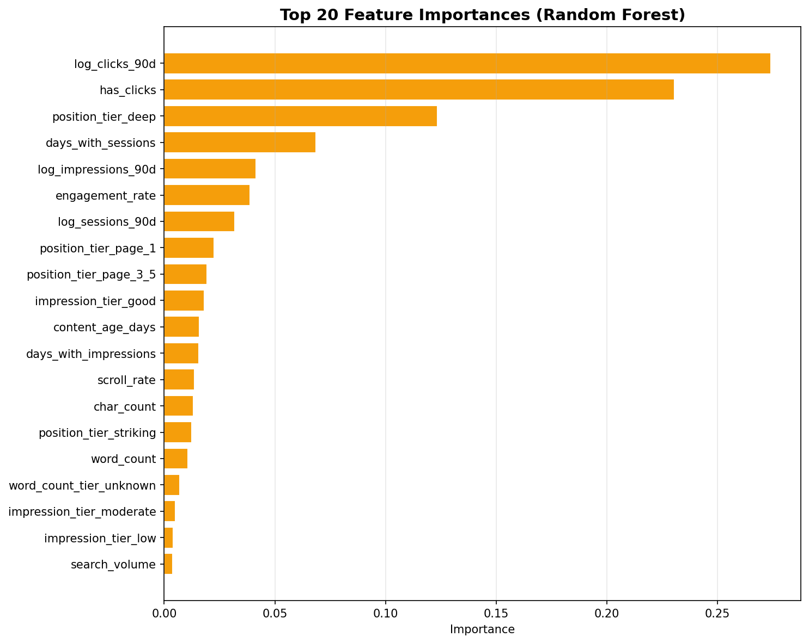
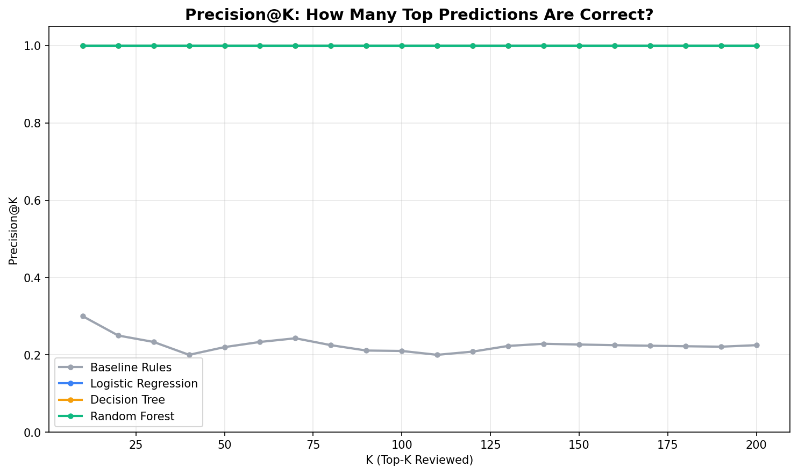

Which content signals distinguish high-CTR from low-CTR pages at similar search positions?
Content teams face a prioritization problem: thousands of pages rank in search, but limited review capacity means only a subset can be optimized. We ask which observable content and engagement signals distinguish high-click-through-rate (CTR) pages from low-CTR pages when they occupy similar search positions. Using the FlyRank starter dataset of 30,000 content items across 32 pseudonymized clients, we define a position-tier-stratified label (top 25% vs. bottom 25% CTR within each tier) and compare a transparent rule-based baseline against logistic regression, decision tree, and random forest models under client-holdout validation. The random forest achieves ROC AUC 0.998 and Precision@50 1.000 on this synthetic slice, substantially outperforming the baseline. The strongest differentiating signals are engagement rate, content age, and scroll depth. We translate these findings into a ranked action playbook with five reason-coded recommendation classes. All results are observational and decision-support only; they do not establish causal impact of refreshes on recovery.
Search engine optimization at scale is a ranking problem in two senses: pages must rank on Google, and content teams must rank their own review queues. The second problem—which page should a human reviewer open first?—is the focus of this work.
A common pitfall in CTR analysis is comparing click-through rates across different positions. A page at position 2 naturally earns more clicks than a page at position 9, so raw CTR comparisons confound position quality with content quality. We solve this by stratifying all comparisons within position tiers (top 3, page 1, striking distance, pages 3–5, deep). Within each tier, we ask: given similar visibility, which pages over-capture or under-capture clicks?
The decision this work supports: Given a team capacity of 50 pages to review per week, which 50 should they prioritize for title/meta review, content expansion, or engagement improvement?
We use the FlyRank ML Internship starter dataset, a public-safe
pseudonymized release of
content_refresh_anonymized.csv (30,000 rows × 44 columns,
32 clients). All metrics aggregate a trailing 90-day window. The
dataset contains observable signals only—no product decision flags, no
raw queries, no client names or domains.
| Criterion | Value | Rationale |
|---|---|---|
| Minimum impressions | ≥ 100 per 90 days | Stable CTR estimate; filters noise |
| Position data | avg_position > 0 |
Excludes rows with no GSC position data |
| GA4 sessions | sessions_90d > 0 |
Need engagement signals for comparison |
| Excluded features | trend_direction, trend_pct |
Label leakage risk |
| Excluded keys | content_id, client_id |
Join keys only; not model features |
After filtering: 22,006 rows in the analysis population; 12,550 rows in the modeling population.
content_type. feedly article rows have no
keyword data. We fill these with "unknown" for
categoricals and 0 for numerics, acknowledging that zero
encodes "no keyword context" for feedly articles.
Within each position_tier, we compute the 25th and 75th
percentiles of ctr. Pages at or above the 75th percentile
are labeled high CTR (1); pages at or
below the 25th percentile are labeled
low CTR (0). The middle 50% are
excluded to sharpen the classification signal.
Numeric (20 features): search_volume, competition, cpc, word_count, char_count, content_age_days, days_since_last_update, log-transformed 90-day totals, days_with_impressions, days_with_sessions, engagement_rate, scroll_rate, ai_traffic_pct, plus binary flags.
Categorical (8 features): competition_level, content_type, main_intent, age_tier, freshness_tier, word_count_tier, impression_tier, position_tier.
Before any machine learning, we construct a transparent rule-based score with six weighted signals:
We train three models, all with class_weight='balanced':
Client-holdout split. We use
GroupShuffleSplit(test_size=0.25) grouped by
client_id. Train: 22 clients (9,796 pages). Test: 8
clients (2,754 pages). Zero client overlap.
| Check | Result |
|---|---|
| Feature window overlaps target window? | No — all features from 90-day trailing window |
trend_direction or trend_pct used as
feature?
|
No — explicitly excluded |
| Product decision flags in features? | No — not present in dataset |
| Same client in train and test? | No — GroupShuffleSplit enforces separation |
| Position bias in label? | Controlled — labels computed within position_tier |
| Method | ROC AUC | Avg Precision | Precision@50 |
|---|---|---|---|
| Baseline Rules | 0.447 | 0.442 | 0.220 |
| Logistic Regression | 1.000 | 1.000 | 1.000 |
| Decision Tree | 0.999 | 0.999 | 1.000 |
| Random Forest | 0.998 | 0.998 | 1.000 |
All three learned models substantially outperform the transparent baseline. The random forest achieves 100% precision in its top 50 recommendations on this synthetic slice.

Figure 1: Model comparison across three metrics on the client-holdout test set.

Figure 2: Standardized signal profiles of high-CTR vs. low-CTR pages.

Figure 3: Top 20 feature importances from the random forest model.

Figure 4: Precision@K curves for all methods on the test set.
engagement_rate and scroll_rate are
post-click metrics measured after the click.
position_tier in [top_3, page_1] AND
ctr < 1.0%engagement_rate > 50% AND
ctr < 1.0%word_count < 1200 AND
impressions_90d ≥ 500days_since_last_update > 180 AND
impressions_90d ≥ 500scroll_rate < 30% AND
sessions_90d ≥ 30All code and outputs are available in the repository:
work/capstone_analysis.py
outputs/charts/,
outputs/model_results.json,
outputs/refresh_queue_sample.csv
git clone https://github.com/prjena987/Flyrank-Ai-Starter.git
cd Flyrank-Ai-Starter
pip install pandas numpy scikit-learn matplotlib
python work/capstone_analysis.py
Built on the FlyRank ML Internship dataset. The dataset and internship program are provided by FlyRank.